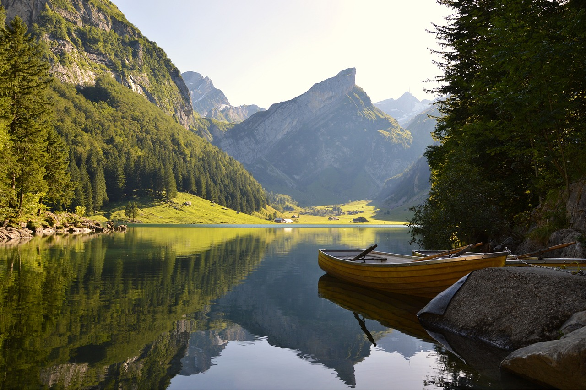
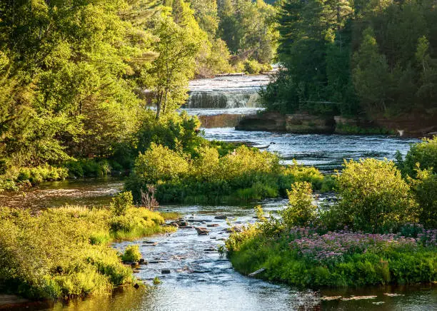

Overview
Purpose
Hey Guys!!! How are you? Are you ready for new adventures? This site is going to show you the new water adventures near from you! I want to show you how important it is for you to venture to several of the most famous waterfalls in the country. Your stress will be gone and you will see how important contact with nature is. Welcome and enjoy our home page!
Audience
Target Audience
- Families
- Friends
- People who like camping
- Adventurers
- Backpackers
- People who would like to rest
- People who like to have contact with nature
- Anyway, all the people who love a holiday to spend with family and friends
Branding
Website Logo

Style Guide
Color Palette
Palette URL:
https://coolors.co/03045e-023e8a-0077b6-0096c7-00b4d8-48cae4-90e0ef-ade8f4-caf0f8| Primary | Secondary | Accent 1 | Accent 2 |
|---|---|---|---|
| #90e0ef | #03045e | #caf0f8 | white |
Typography
Heading Font: Roboto
Paragraph Font: Lato
Normal paragraph example
The best Whitewater Rafting in Colorado, White Water Rafting Company offers rafting on the Colorado and Roaring Fork Rivers in Glenwood Springs. Since 1974, we have been family owned and operated, rafting the Shoshone section of Glenwood Canyon and beyond.
Colored paragraph example
Trips vary from mild and great for families, to trips exclusively for physically fit and experienced rafters. No matter what type of river adventures you are seeking, White Water Rafting Company can make it happen for you.
Navigation
Site Map
Content
Home page
Welcome to River Adventures!
Embark on a journey where the currents of excitement and the serenity of nature converge. Our page is your gateway to the thrilling world of river adventures, where each ripple tells a story and every bend promises a new discovery.
Whether you're an avid kayaker, a nature enthusiast, or simply looking for a peaceful escape, you've found your online haven. Join us as we navigate the streams of exploration, sharing tales of breathtaking landscapes, adrenaline-pumping rapids, and the unique charm that only rivers can offer.
At River Adventures, we believe in the transformative power of nature, and we invite you to be part of our community. Let the flow of information guide you to the best spots, gear up with tips from seasoned river-goers, and immerse yourself in the beauty that unfolds along the riverbanks.
Get ready to dive in, explore, and connect with fellow river enthusiasts. Your adventure begins here, where the rivers whisper tales of excitement and the current carries the promise of unforgettable experiences.
Welcome aboard, river adventurer!
 Rivers
This page is to give information about the rivers that the company runs.
Main Fork of the Salmon River, Idaho
Nestled deep in the Frank Church Wilderness of No Return winds the Salmon river. The Salmon was given the nickname long ago as the River of No Return by the people living near it because of the number of folks that came to visit and fell so in love with the rugged beauty of the river that they never left.
Herds of elk and deer graze on the hillsides around the river and bear and bighorn sheep are also commonly sighted. The river corridor is also lined with awe inspiring ponderosa pine which tower over the sandy beaches in the campsites and provide shelter from sun or rain when needed.
Let's not forget the rapids! They range from class I-IV. The Salmon is one of the longest undammed rivers in the United States. As a free flowing river the water is higher, faster, and colder in the early summer and lower, slower, and warmer in the late summer. There are good rapids all summer...but families with children who like to swim tend to appreciate the late summer's slower, warmer water more.
Grand Canyon, Arizona
This is the grand daddy of all canyons and the grand daddy of all river trips. You will never forget your visit to the Grand Canyon.
Grand Canyon river rafting combines world-class whitewater with breathtaking scenery to make one truly unforgettable river experience. The canyon is filled not only with exhilarating whitewater rapids, but with side canyons and ancient indian ruins accessible only by river.
CLASS I - X: The Grand Canyon uses a unique river rating scale. The rapids in the Canyon are technically rated I - X ( 1 - 10) to accommodate such a wide variety of rapids and river variances. However, most people are familiar with the regular I - V river rating scale, so we often refer to both.
Images for the Home page


Events
We are excited to announce our special events.
We would like you to participate in all of them.
December 22nd we will have the world amateur meeting. Come join! Tickets on sale!
Wireframes
Home